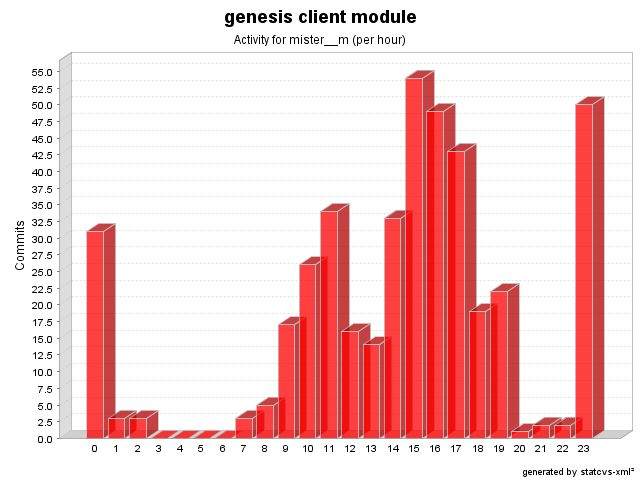

| Login: mister__m Fullname: mister__m Revisions: 427 Lines of Code: 10742 Added Lines of Code: 13301 Lines of Code per Change: 25.2 |

| Date | Author | File/Message |
|---|---|---|
| 3/24/09 3:47 PM | mister__m | A path with a null element will now return null instead of throwing NestedNullException (issue # 512)
(2 Files changed,
17 Lines changed) test-src/net/java/dev/genesis/ui/swt/widgets/TableWidgetBinderTest.java 1.5
(+6
-6)
src/net/java/dev/genesis/ui/swt/widgets/AbstractWidgetBinder.java 1.9
(+11
-0)
|
| 3/24/09 3:25 PM | mister__m | Failing test case for issue # 512
(2 Files changed,
6 Lines changed) src/net/java/dev/genesis/ui/swt/widgets/TableWidgetBinder.java 1.7
(+1
-1)
test-src/net/java/dev/genesis/ui/swt/widgets/TableWidgetBinderTest.java 1.4
(+5
-4)
|
| 3/24/09 3:00 PM | mister__m | A path with a null element will now return null instead of throwing NestedNullException (issue # 511)
(2 Files changed,
21 Lines changed) src/net/java/dev/genesis/ui/swing/components/AbstractComponentBinder.java 1.17
(+11
-0)
test-src/net/java/dev/genesis/ui/swing/components/JTableComponentBinderTest.java 1.4
(+10
-10)
|
| 3/24/09 2:00 PM | mister__m | Failing test case for issue # 511
(2 Files changed,
17 Lines changed) test-src/net/java/dev/genesis/mockobjects/MockBean.java 1.3
(+15
-1)
test-src/net/java/dev/genesis/ui/swing/components/SwingUtils.java 1.4
(+2
-2)
|
| 6/11/08 12:18 PM | mister__m | Fix for issue # 485
(1 Files changed,
2 Lines changed) src/net/java/dev/genesis/ui/controller/DefaultFormController.java 1.40
(+2
-1)
|
| 6/10/08 4:28 PM | mister__m | Null keys after formatting are considered to be an error (issue # 494)
(1 Files changed,
14 Lines changed) src/net/java/dev/genesis/ui/swing/components/ComponentBinderHelper.java 1.3
(+14
-3)
|
| 6/9/08 5:53 PM | mister__m | getActions() called instead of deprecate getActionMap() (issue # 487)
(1 Files changed,
3 Lines changed) src/net/java/dev/genesis/ui/ValidationUtils.java 1.8
(+3
-3)
|
| 6/9/08 3:09 PM | mister__m | URL validation support added (issue # 489)
(2 Files changed,
8 Lines changed) src/net/java/dev/genesis/ui/BasicValidator.java 1.12
(+7
-0)
src/messages.properties.sample 1.8
(+1
-0)
|
| 6/6/08 6:17 PM | mister__m | A warning is logged if no converter is configured for a field (issue # 473)
(1 Files changed,
13 Lines changed) src/net/java/dev/genesis/ui/metadata/FieldMetadata.java 1.9
(+13
-3)
|
| 6/6/08 5:52 PM | mister__m | Merge from GENESIS_3_1_BRANCH and moving to 3.2-dev
(16 Files changed,
640 Lines changed) test-src/net/java/dev/genesis/text/ScriptFormatterTest.java 1.2 added 108 test-src/net/java/dev/genesis/ui/thinlet/ThinletUtils.java 1.4
(+1
-2)
src/net/java/dev/genesis/text/ScriptFormatterAdapter.java 1.2 removed test-src/net/java/dev/genesis/ui/UIUtilsTest.java 1.3
(+2
-2)
src/net/java/dev/genesis/ui/binding/AbstractBinder.java 1.14
(+2
-12)
src/net/java/dev/genesis/text/ScriptFormatter.java 1.2 added 91 test-src/net/java/dev/genesis/ui/swing/components/table/JTableIndexResolverRegistryTest.java 1.2 added 86 test-src/net/java/dev/genesis/ui/swing/components/table/DefaultJTableIndexResolverTest.java 1.2 added 95 test-src/net/java/dev/genesis/ui/binding/AbstractBinderTest.java 1.4
(+10
-5)
src/net/java/dev/genesis/ui/ValidationUtils.java 1.7
(+11
-2)
src/net/java/dev/genesis/ui/swing/components/table/DefaultJTableIndexResolver.java 1.3
(+5
-5)
test-src/net/java/dev/genesis/ui/thinlet/ThinletBinderTest.java 1.13
(+167
-1)
src/net/java/dev/genesis/ui/thinlet/ThinletBinder.java 1.57
(+1
-11)
src/net/java/dev/genesis/ui/thinlet/BaseThinlet.java 1.48
(+4
-2)
test-src/net/java/dev/genesis/ui/controller/MockFormController.java 1.6
(+3
-2)
test-src/net/java/dev/genesis/ui/swing/components/table/MockSortableTable.java 1.2 added 54 |